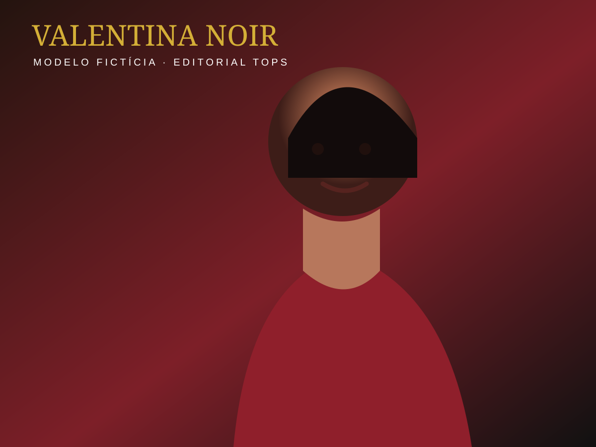
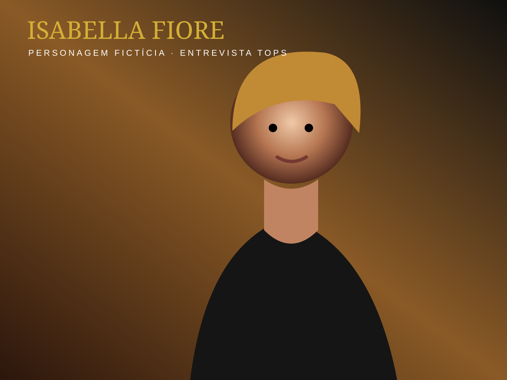

CAPA DA SEMANA
A NOVA FORÇA DA MODA É AGORA!
Editorial demonstrativo com personagens e modelos fictícios.
TOPS

EDIÇÃO DIGITAL
Destaques
Matérias selecionadas pela redação TOPS.
Entrevista exclusiva

PERSONAGEM FICTÍCIACarreira, imagem e próximos projetos
Uma conversa inspiradora sobre identidade, trabalho, presença e o futuro da moda.
Ler entrevistaPróximos eventos
REVISTA FOLHEÁVEL
Leia a edição digital interativa
Clique nas setas, use o teclado ou deslize no celular para navegar pelas páginas. A revista se adapta para desktop, iPad, tablets e smartphones.